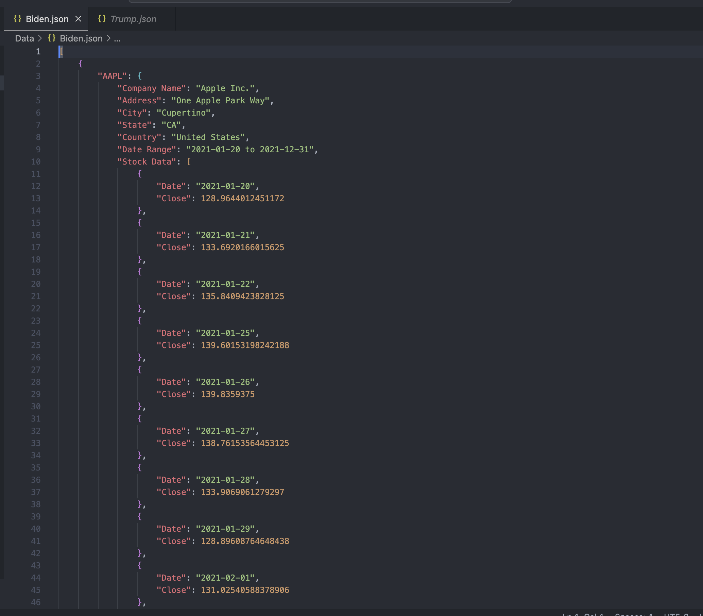
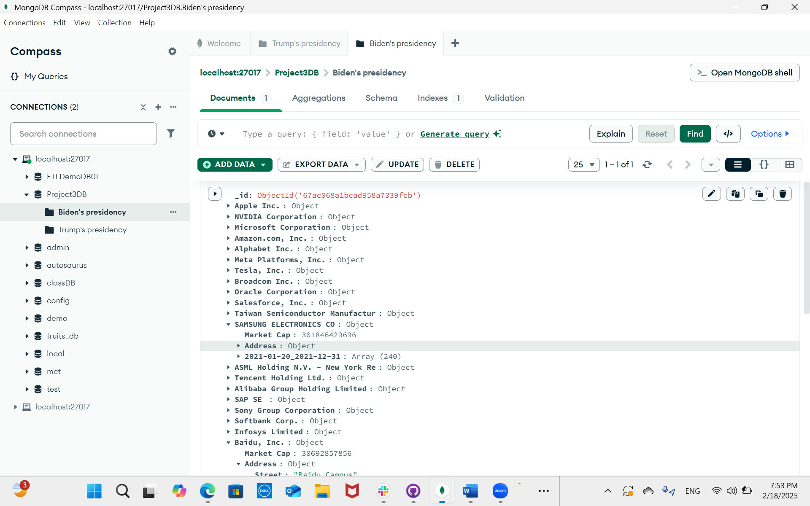
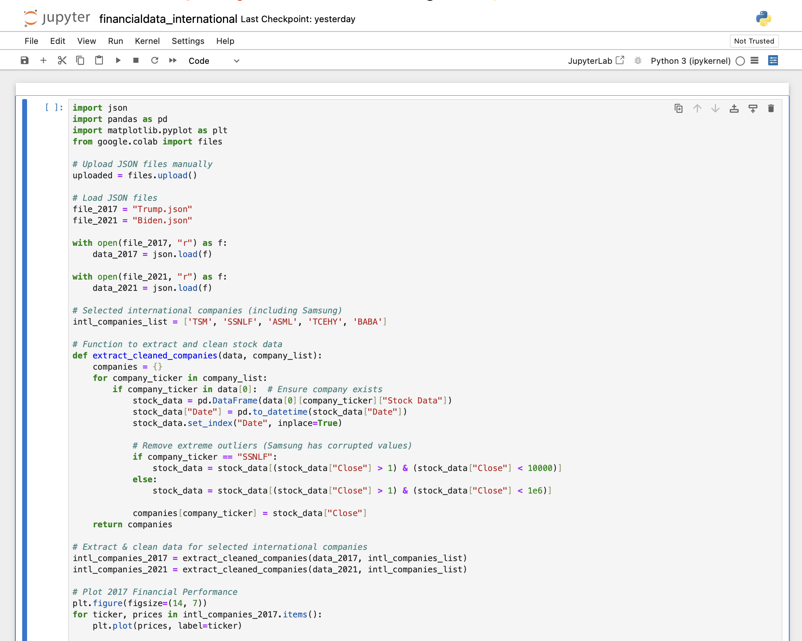
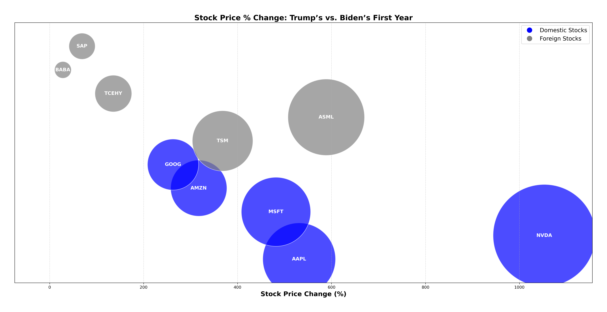
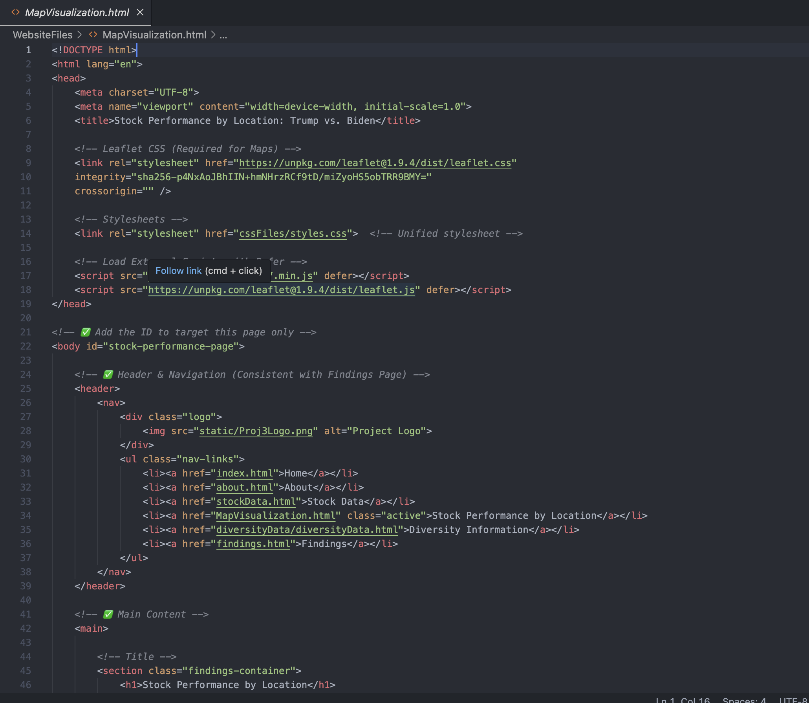
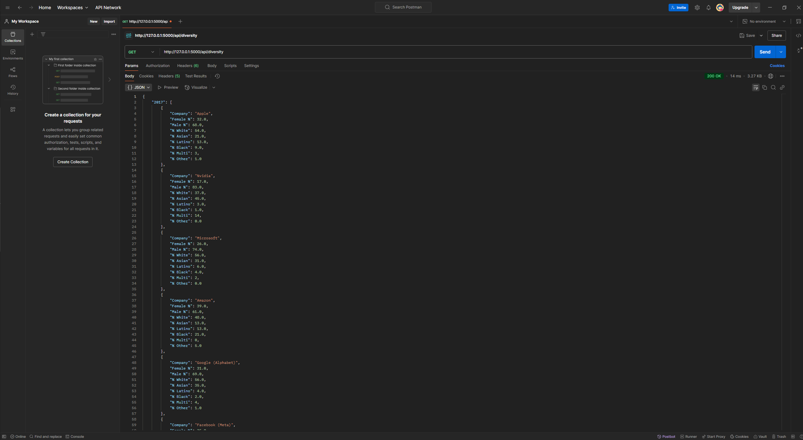

About Our Project
Purpose: This analysis examines the performance of the top five tech sector stocks during the first year of both President Trump’s and President Biden’s terms. Stock price trends (both domestic and foreign), geographic distribution, and diversity changes from 2017 to 2021 are explored through visualizations created for this study.
Stock Market Leaders
Apple
(AAPL)
Nvidia
(NVDA)
Microsoft
(MSFT)
Amazon
(AMZN)
(GOOGL)
ASML
(ASML) – 🇳🇱 Netherlands
Tencent
(TCEHY) – 🇨🇳 China
Alibaba
(BABA) – 🇨🇳 China
SAP
(SAP) – 🇩🇪 Germany
Taiwan Semiconductor
(TSM) – 🇹🇼 Taiwan
How We Collect & Process Data
Our project follows a structured pipeline for data collection, cleaning, and visualization.
Step 1: Scraping Stock Market Data
Using Python and yfinance, we fetch stock price data for key U.S. and foreign companies.
Step 2: Formatting Data into JSON
The collected stock data is structured into JSON format for easy processing.
Step 3: Storing Data in MongoDB
We save the structured JSON into a cloud-based MongoDB Atlas database.
Step 4: Extracting & Analyzing Data
Using Jupyter Notebook, we analyze stock performance trends under each presidency.
Step 5: Visualizing Data with Matplotlib
Matplotlib is used to create stock performance graphs for different companies.
Step 6: Displaying Data on the Website
We use Leaflet.js to create interactive maps that showcase stock performance changes globally.
Step 7 (Exploratory): Exploring Flask for a Dynamic Background
We tested Flask to serve real-time data via API endpoints, including stock performance by presidency, GeoJSON for maps, and diversity stats. This enabled dynamic data retrieval instead of relying on static files.
